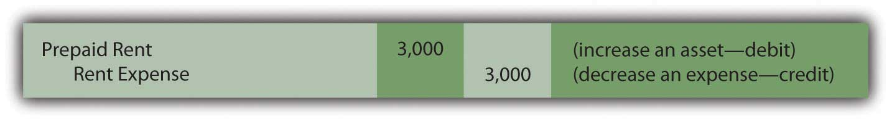

At the end of this section, students should be able to meet the following objectives:
Question: The second adjustment to be considered here involves the handling of prepaid expensesAssets that are created when an expense is paid in advance; normally recorded as an asset initially and then gradually reassigned to expense over time through adjusting entries.. In the transactions that were recorded in the previous chapter, Journal Entry 10 reported a $4,000 payment made in advance for four months of rent to use a building. An asset—prepaid rent—was recorded through the normal accounting process. This account is listed on the trial balance in Figure 5.1 "Updated Trial Balance". Why might a year-end adjusting entry be needed in connection with a prepaid expense?
Answer: During these four months, the Lawndale Company will use the rented facility to help generate revenue. Over that time, the future economic benefit established by the payment gradually becomes a past benefit. The asset literally changes into an expense day by day. For illustrative purposes, assume that one month has now passed since the original payment. This month of benefit provided by the rent ($1,000 or $4,000/four months) no longer exists; it has been consumed.
As a preliminary step in preparing financial statements, an adjusting entry is needed to reclassify $1,000 from the asset into an expense account. This adjustment leaves $3,000 in the asset (for the remaining three months of rent on the building) while $1,000 is now reported as an expense (for the previous one month of rent).
Figure 5.3 Adjusting Entry 2: Previously Rented Facility Is Used
The basic purpose of adjusting entries is to take whatever amounts reside in the ledger and align them with the requirements of U.S. generally accepted accounting principles (U.S. GAAP). For this illustration, the original $4,000 payment was classified as a prepaid rent and the adjustment above was created in response to that initial entry.
In recording transactions, some accounting systems mechanically handle events in a different manner than others. Thus, construction of an adjusting entry always depends on the recording that previously took place. To illustrate, assume that when this $4,000 payment was made, the company’s computer program had been designed to enter a debit to rent expense rather than to prepaid rent. All money spent for rent was automatically recorded as rent expense. This initial accounting has no impact on the final figures to be reported but does alter the adjustment process.
An adjusting entry still needs to be prepared so that the expense appearing on the income statement is $1,000 (for the past one month) while the asset on the balance sheet is shown as $3,000 (for the next three months). If the entire cost of $4,000 is in rent expense, the following alternative is necessary to arrive at the proper balances. It shifts $3,000 out of the expense and into the asset.
Figure 5.4 Adjusting Entry 3: Alternative Based on a Different Initial Recording
This entry leaves $1,000 in expense and $3,000 as the asset. Regardless of the account, the accountant first determines the balance that is present in the ledger and then creates the specific adjustment needed to arrive at fairly presented figures.
Link to multiple-choice question for practice purposes: http://www.quia.com/quiz/2092645.html
Question: Accrued revenue is the third general type of adjustment to be covered here. Based on the title, this revenue is one that grows gradually over time. If not recorded by a company’s accounting system, updating is necessary before financial statements are prepared. What adjustment is used to recognize accrued revenue that has not previously been recorded?
Answer: Various types of revenue are earned as time passes rather than through a physical event such as the sale of inventory. To illustrate, assume that a customer comes to the Lawndale Company five days before the end of the year and asks for assistance. The customer must be away for the next thirty days and wants company employees to feed, water, and care for his horses during the period of absence. Everything needed for the job is available at the customer’s farm; Lawndale just has to provide the service. The parties agree that the company will receive $100 per day for this work with payment to be made upon the person’s return.
No asset changes hands at the start of this task. Thus, the company’s accounting system is not likely to make any entry until payment is eventually received. However, assume that after the first five days of work, the company is ready to prepare financial statements and needs to recognize all revenue earned to date. The service to this customer has been carried out for five days at a rate of $100 per day. The company has performed the work to earn $500, an amount that will not be received until later. This receivable and revenue should be recognized through an adjusting entry so that the reported financial figures are fairly presented. The earning process for the $500 occurred this year and should be recorded in this year.
Figure 5.5 Adjusting Entry 4: Revenue Is Earned for Work Done
No recognition is needed for cost of goods sold. Inventory is not being sold but rather is a service. The $500 receivable will be removed in the subsequent period when the customer eventually pays the company for the services rendered.
Question: As discussed in an earlier chapter, the revenue realization principle (within accrual accounting) provides formal guidance for the timing of revenue reporting. It states in part that the earning process must be substantially complete before revenue can be recognized. That seems reasonable. In the above example, the work has only been performed for five days out of a total of thirty. That is not substantially complete. Why is any accrued revenue recognized if the earning process is not substantially complete?
Answer: This question draws attention to a difficult problem that accountants face frequently in creating a fair portrait of a company. The proper recognition of revenue is one of the most challenging tasks encountered in financial accounting. Here, the simplest way to resolve this issue is to consider the nature of the task to be performed.
Is this job a single task to be carried out by the company over thirty days or is it thirty distinct tasks to be handled once a day over this period of time?
If the work of feeding and caring for the horses is one large task like painting a house, then the earning process is only 5/30 finished at the moment and not substantially complete. No revenue is recognized until the work has been performed for twenty-five more days. The previous adjusting entry is not warranted.
Conversely, if this assignment is thirty separate tasks, then five of them are substantially complete and revenue of $500 is properly recorded by the above entry. Unfortunately, the distinction is not always clear. Because accounting is conservative, revenue should never be recognized unless evidence predominates that the individual tasks are clearly separate events.
Link to multiple-choice question for practice purposes: http://www.quia.com/quiz/2092646.html
Question: In practice, how does an accountant determine whether a specific job is substantially complete? Because of the direct impact on net income, this judgment must be critical in financial reporting.
Answer: Accountants spend a lot of time searching for credible evidence as to the true nature of the events they encounter. That can be a challenge. Their goal is to ensure that all information included in financial statements is presented fairly according to U.S. GAAP.
Is a job substantially complete so that revenue can be recognized or not?
That question can often be difficult to answer. Here is one technique that might be applied in analyzing this particular example. Assume that after five days, Lawndale had to quit feeding the customer’s horses for some legitimate reason. Should the company be able to demand and collect all $500 for the work done to that point? If so, then those five days are distinct tasks that have been completed. However, if no money would be due based on working just five days, substantial completion has not been achieved by the services performed. Thus, revenue recognition would be inappropriate.
In Adjusting Entry 3, the assumption is made that the daily tasks are separate and that the company could collect for the work accomplished to date. However, this type of judgment can be extremely difficult in the real world. It is often the product of much thought and discussion. The impact on the financial statements can be material, which increases pressure on the accountant.
Students often enter into a financial accounting course believing that little is required other than learning set rules and then following them mechanically. As will be demonstrated many times in this textbook, nothing ever replaces the need for experienced judgment on the part of the accountant.
To align reported balances with the rules of accrual accounting, adjusting entries are created as a step in the preparation of financial statements. Prepaid expenses are normally recorded first as assets and then reclassified to expense as time passes to satisfy the matching principle. The mechanics of this process will vary somewhat based on the initial recording of the payment. Accrued revenues and the corresponding receivables are recognized when the earning process is deemed to be substantially complete. The time at which this benchmark is achieved often depends on whether a single job or a collection of independent tasks is under way. As with so many areas of financial reporting, that decision can rely heavily on professional judgment.